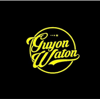

My Profile
GUYON WATON OFFICIAL
Guyon waton merupakan grup musik dangdut dan pop Jawa Indonesia yang berasal dari Kabupaten Kulon Progo
Daerah Istimewa Yogyakarta. Guyon Waton terbentuk pada tahun 2015. Nama Guyon Waton berasal dari kata "Guyon"
yang berarti candaan dan "waton" artinya asal, sehingga Guyon Waton artinya bercanda asal. Guyon Waton dalam
perjalanannya telah merilis beberapa single, beberapa diantaranya adalah Sebatas teman, Korban janji, Klebus,
Kok iso yo, Pingal, dan beberapa lagu lainnya. Guyon waton juga sempat beberapa kali meriliskan lagu hasil
duet nya dengan beberapa musisi lainnya seperti Ngatmombilung hingga Denny Caknan.
Vokalis : Faisal Bagus Ibrahim
Gitaris : Ahmad Arifin
Ketipung : Wahyu Susilo Jati
Bas : Yuli Hamdani
Melody : Hieronimus Ferry Widiyatmoko
Ukulele : Ndika Rismaya Pelma Arga
Penggembira : Fauzan Jadid